State of the Hackaday
15 Years of Hardware
Mike Szczys
Editor in Chief
Hackaday.com // Hackaday.io
@szczys
What is Hackaday?

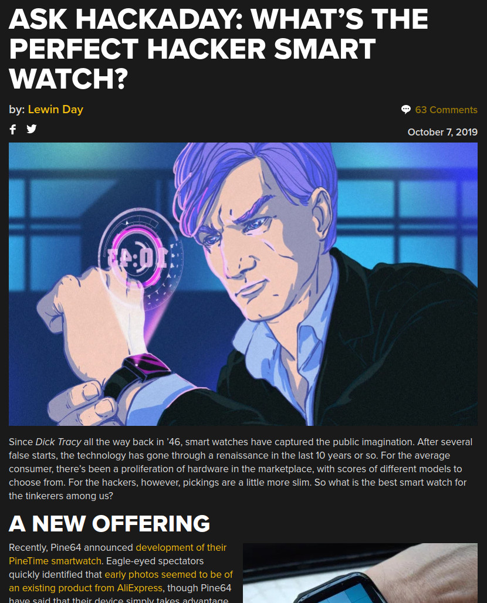
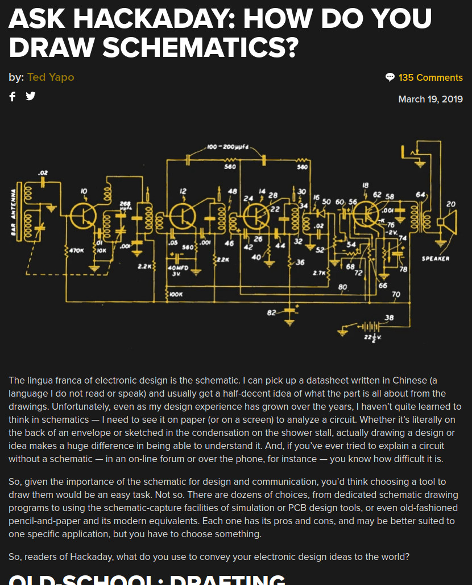
“Hackaday is the Common Link in the Collective Brain”
–Elliot Williams
Managing Editor, Hackaday
Great Things Happened in 2019
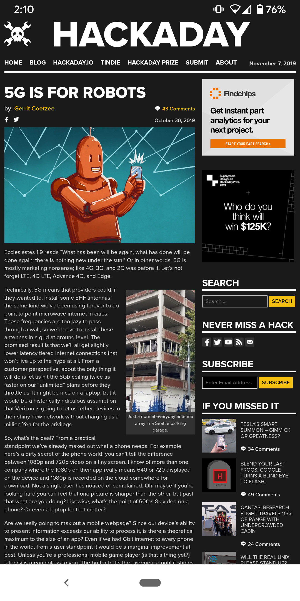
New Mobile Look!
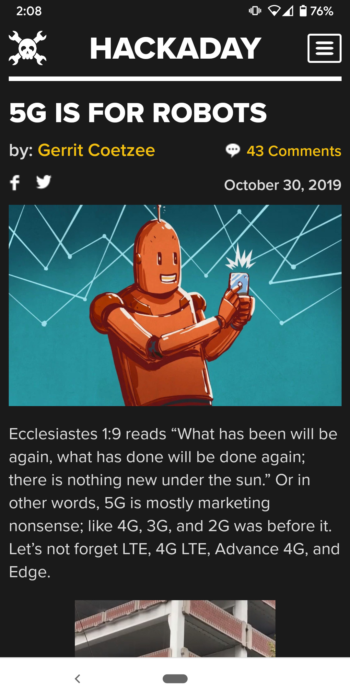Hackaday.io app!
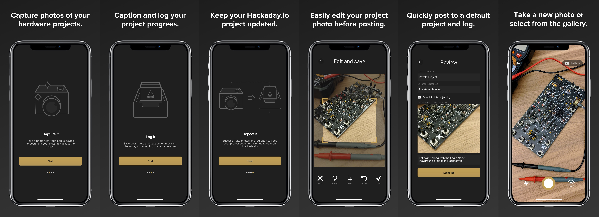https://hackaday.io/project/46/log/164492
Podcast!
43 episodes and counting...
Our Editorial Trajectory
New Column: Week in Security
Fifteen Years
of fresh hacks every day
5,545 Days
34,718 Articles
918,271 Comments
Solo Hack Percentage (SHP):
- 2004 100%
- 2005 46%
- 2006 80%
- 2007 84%
- 2008 28%
- 2009 4%
- 2010 1%
- 2011 0%
- 2012 1%
- 2013 0%
- 2014 0%
- 2015 0%
- 2016 0%
- 2017 0%
- 2018 0%
- 2019 0%
Hackaday Authors
- Juan Aguilar
- Akiba
- Charles Alexanian
- Alasdair Allan
- Chris Anderson
- Anthony
- Voja Antonic
- Bob Baddeley
- Richard Baguley
- John Baichtal
- Zach Banks
- Edward Becker
- Brian Benchoff
- Jonathan Bennett
- Daniel Bogdanoff
- Brian Boucheron
- Sean Boyce
- Jasmine Brackett
- Aleksandar Bradic
- Rich Bremer
- Jack Buffington
- Phil Burgess
- Nick Caiello
- Strom Carlson
- Joey Celis
- Gregory L. Charvat
- Roger Cheng
- chriskiick
- Michael Ciuffo
- cnlohr
- Bryan Cockfield
- Gerrit Coetzee
- Jesse Congdon
- Nick Conn
- Abe Connelly
- Danie Conradie
- Ground Control
- Jeremy Cook
- Cameron Coward
- Kevin Dady
- Kevin Darrah
- Lewin Day
- Ben Delarre
- Ed Van Cise
- Steven Dufresne
- Noah Dunker
- Quinn Dunki
- Brandon Dunson
- Barb Dybwad
- Benjamin Eckel
- Eliot
- Tucker Ervin
- Eric Evenchick
- fabienneserriere
- Adam Fabio
- Theodora Fabio
- Lauren Faris
- Rachel Fee
- Ryan Fitzpatrick
- Matt Freund
- Chris Gilmer
- Keely Grand
- Lara Grant
- George Graves
- Sven Gregori
- Jakob Griffith
- Hackaday
- Brett Haddock
- DJ Harrigan
- Adam Harris
- Todd Harrison
- Rich Hawkes
- Bil Herd
- James Hobson
- Ian
- Greg R. Jacobs
- Ben James
- jimmierodgers
- Jeff Katz
- Denisa Kera
- Jason Komp
- Caleb Kraft
- Sophi Kravitz
- Jack Laidlaw
- Kimberly Lau
- Chad Lawson
- Helen Leigh
- Sharon Lin
- Jenny List
- Drew Littrell
- loganwilliams
- Patrick Lokken
- Anool Mahidharia
- Adil Malik
- Dan Maloney
- Martin Malý
- Marsh
- Brian McEvoy
- Rud Merriam
- David A. Mindell
- Adam Munich
- James Munns
- Matthew Murphy
- Jacob Nahin
- Tom Nardi
- Mike Nathan
- Jamie Navarro
- Chris Nefcy
- Chris Nelson
- Will O'Brien
- Rick Osgood
- Kristina Panos
- Donald Papp
- Sean Percival
- Sarah Petkus
- Erin Pinheiro
- Maya Posch
- Yair Reshef
- Drew Risinger
- Manuel Rodriguez-Achach
- Peter Rojas
- Jason Rollette
- rossfairgrieve
- Phillip Ryals
- Kerry Scharfglass
- Matt Schulz
- Nick Schulze
- Inderpreet Singh
- Mikey Sklar
- Richard Steele
- Mathieu Stephan
- Jason Striegel
- Will Sweatman
- Mike Szczys
- Matt Terndrup
- Joseph Thibodeau
- Devlin Thyne
- Phillip Torrone
- Christian Trapp
- Pedro Umbelino
- Michael Uttmark
- Joshua Vasquez
- Vince Veneziani
- Juha Vierinen
- Jake W
- Moritz Walter
- Christopher Wang
- Steve Watkins
- Alex Weinberg
- Pat Whetman
- Nava Whiteford
- Al Williams
- Elliot Williams
- Joshua Wright
- Naomi Wu
- Ted Yapo
- Ethan Zonca
Adding WiFi
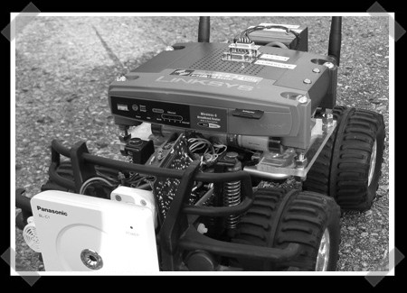
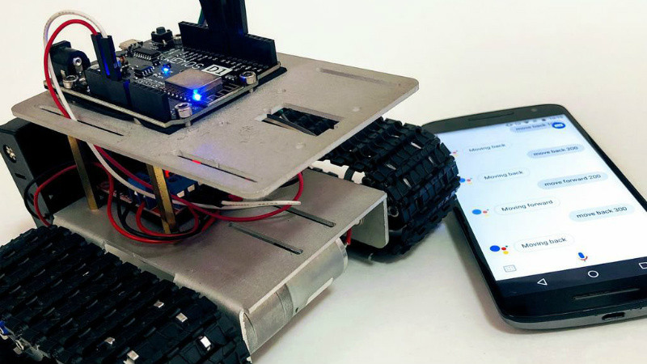
Taking it Cellular
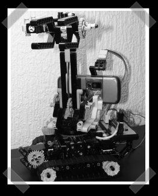
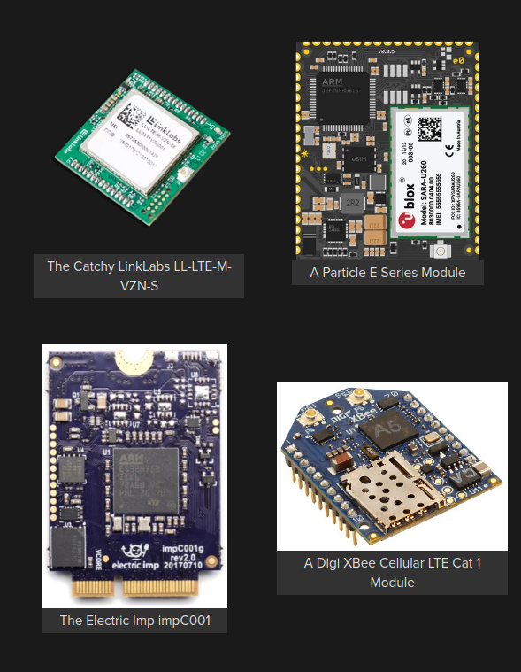
Putting Linux On It
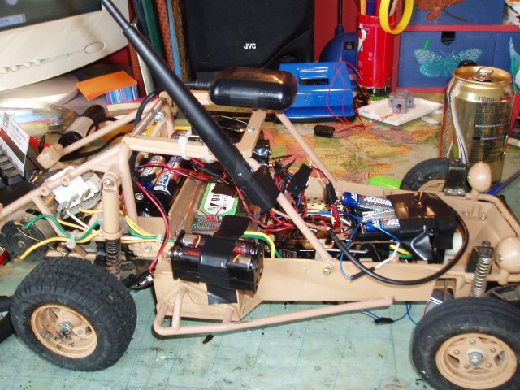
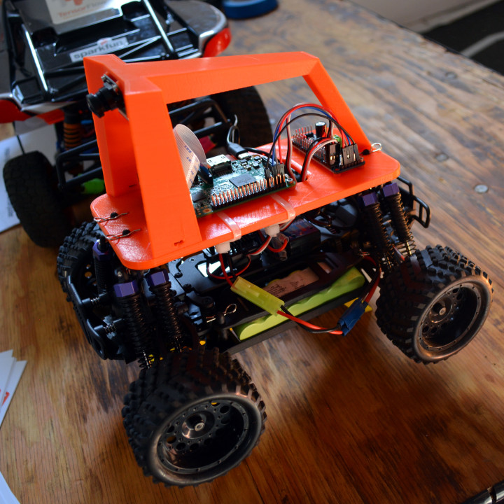
Battery Power
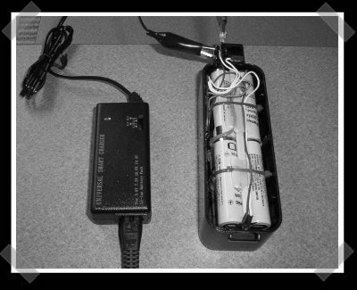
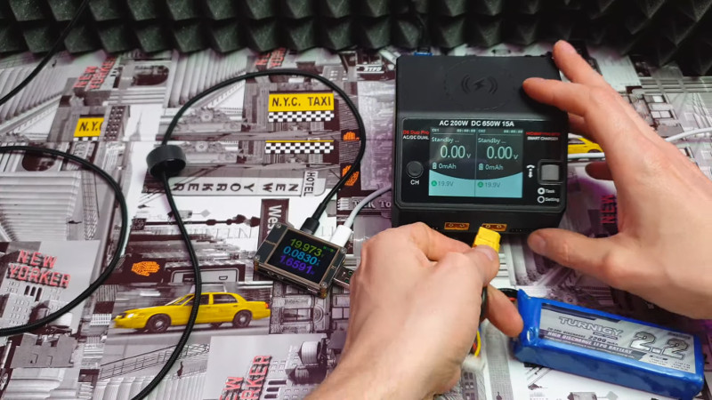
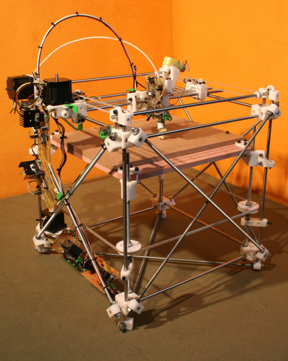
Living in the Future
import <TimeOfFlight.hardware>
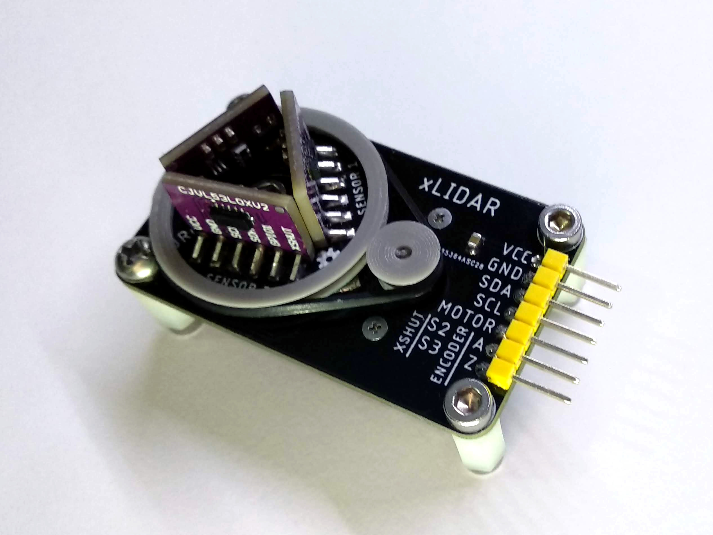https://hackaday.io/project/100965
Modules Within Modules Within Modules
Microcosm of What is to Come
Open Source Toolchains
- yosys
- nextpnr
- Project IceStorm
- Project Trellis
- Project X-Ray
- iverilog
- verilator
Our Mandate
- Encourage Open Wherever Possible
- Normalize Learning and Trying New Things as Entertainment
- Be Inclusive in the Sharing of Knowledge